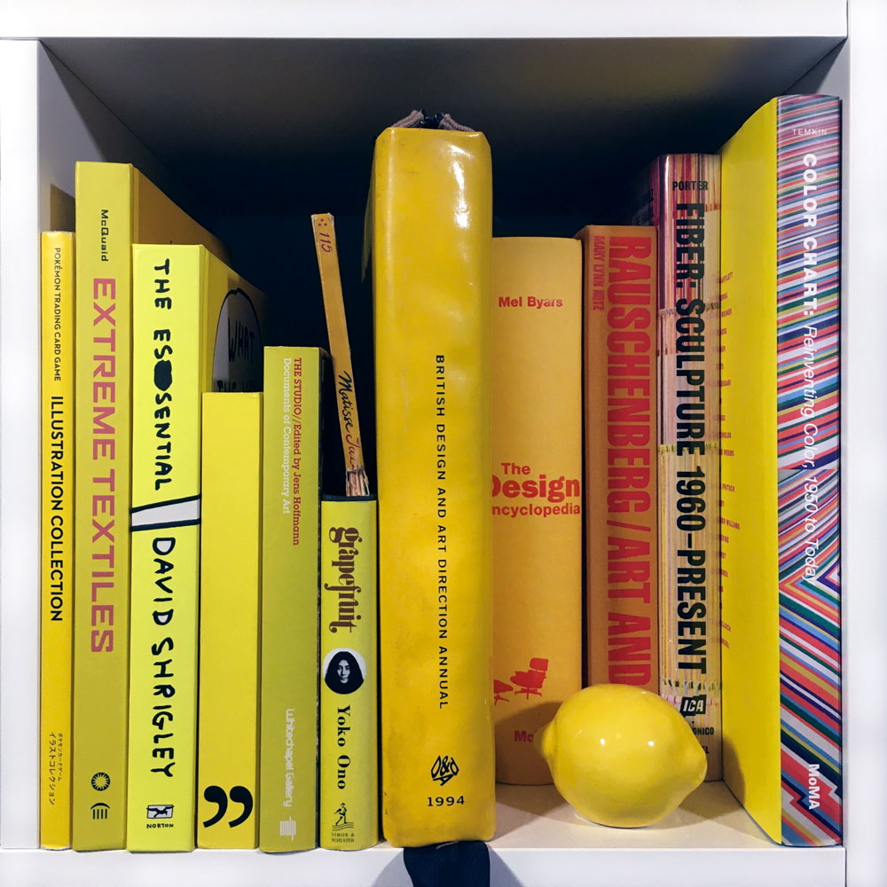

- POKÉMON TRADING CARD GAME:
ILLUSTRATION COLLECTION
Wolfgang Baur, Hollie Beg
Pokémon Company International, 2016
- EXTREME TEXTILES: DESIGNING FOR HIGH PERFORMANCE
Matilda McQuaid, Cooper-Hewitt National Museum of Design
Princeton Architectural Press, New York, 2005
- WHAT THE HELL ARE YOU DOING?
THE ESSENTIAL DAVID SHRIGLEY
David Shrigley
W.W. Norton + Co., New York, 2011
- JAMES JENNIFER GEORGINA: ARE THE BUTLERS
James Bulter, Jennifer Bulter, Georgina Butler
Erasmus Publishing Ltd., London, 2010
- THE STUDIO
Jens Hoffmann
Whitechapel Gallery, London, 2012
- JAZZ
Henri Matisse
R. Piper, 1960
- GRAPEFRUIT: A BOOK OF DRAWINGS BY YOKO ONO
Yoko Ono
Simon and Schuster, New York, 2000
- 1994 BRITISH DESIGN AND ART DIRECTION
The Designers and Art Directors Association
of the United Kingdom, 1994
- THE DESIGN ENCYCLOPEDIA
Mel Byars
Museum of Modern Art, New York +
L. King Publishing, London, 2004
- RAUSCHENBERG: ART AND LIFE
Mary Lynn Kotz
Harry N. Abrams, New York, 2004
- FIBER: SCULPTURE 1960 - PRESENT
Glenn Adamson
Institute of Contemporary Art, Boston, 2014
- COLOR CHART: REINVENTING COLOR, 1950 TO TODAY
Ann Temkin, Briony Fer
The Museum of Modern Art, New York, 2008
